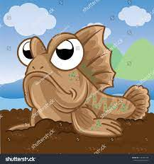

Origami Designs
About Us
Follow Us

Interesting facts about Mudskipper
- 1)Mudskippers are amphibious fish.
- 2)There are 32 living species of mudskipper.
- 3)They lay their eggs in mud burrows.

Interesting facts about Leafy sea slug
- 1)Sea slugs naturally produce toxins to deter predators.
- 2)They are soft-bodied and slow-moving.
- 3)Interesting thing is it can perform the photosynthesis process.
More to explore

You can follow us on Instagram.

Information about Mudskipper.
Information about leafySea slug(sea sheep).
You can get some more information in our youtube channel.
The link is given below or you can follow the steps to get the information.
1)Open google,
2)Search for mudskipper or any other organisms.
OR
1)open youtube,
2)Search for top animals.